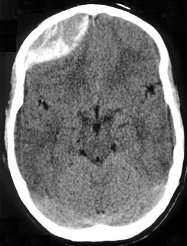
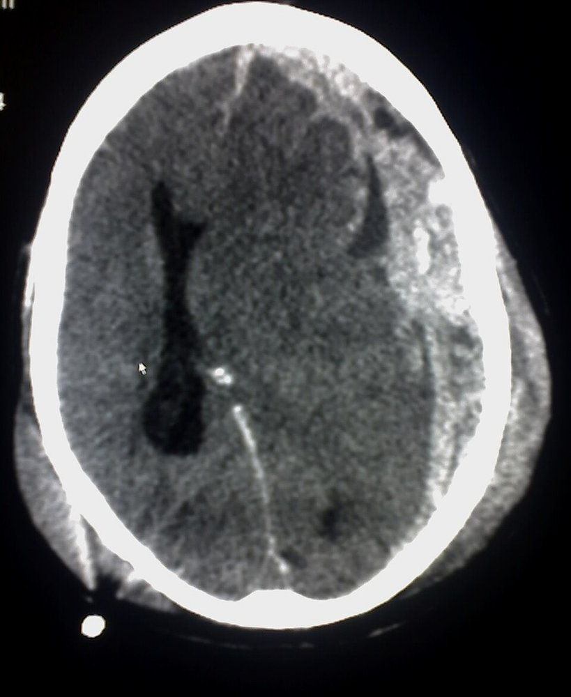
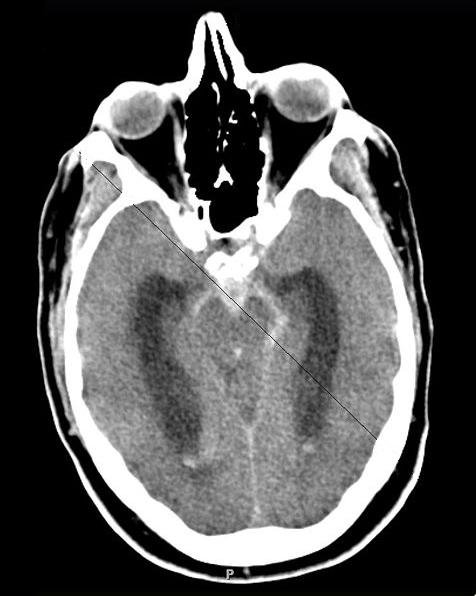
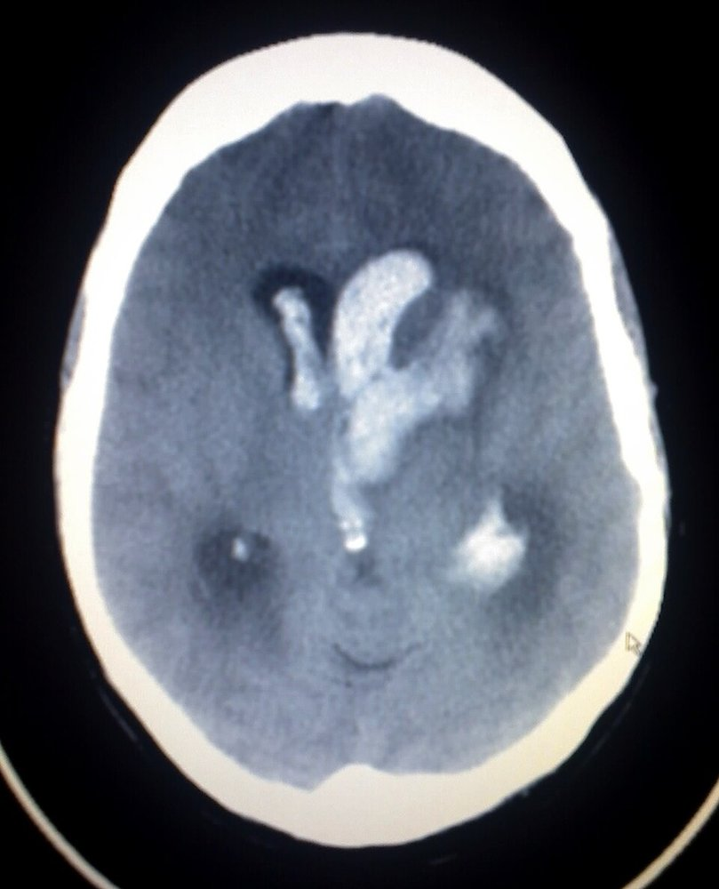
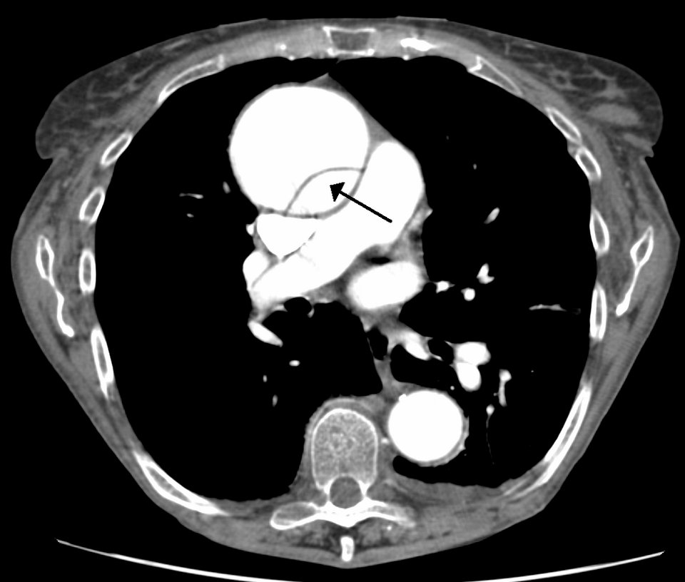
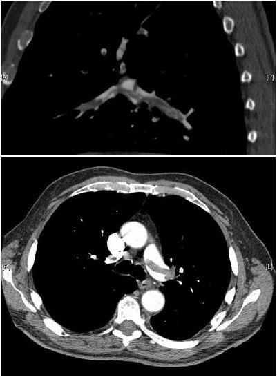
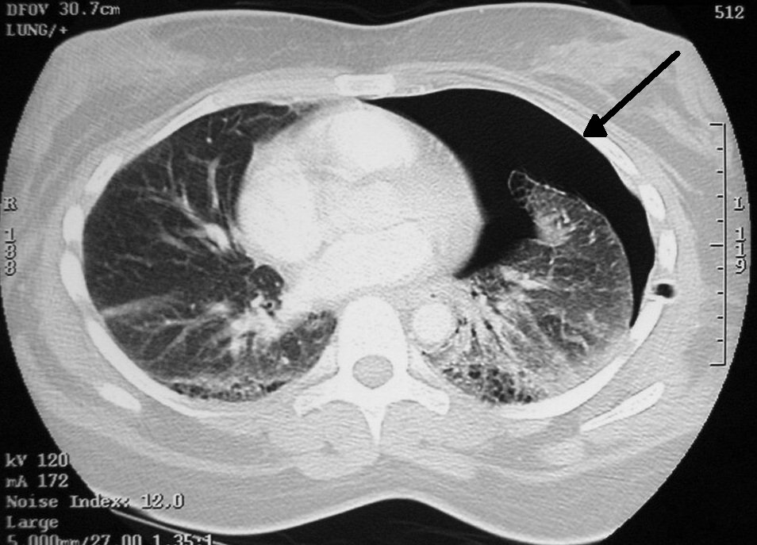
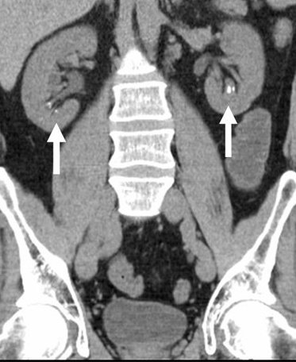
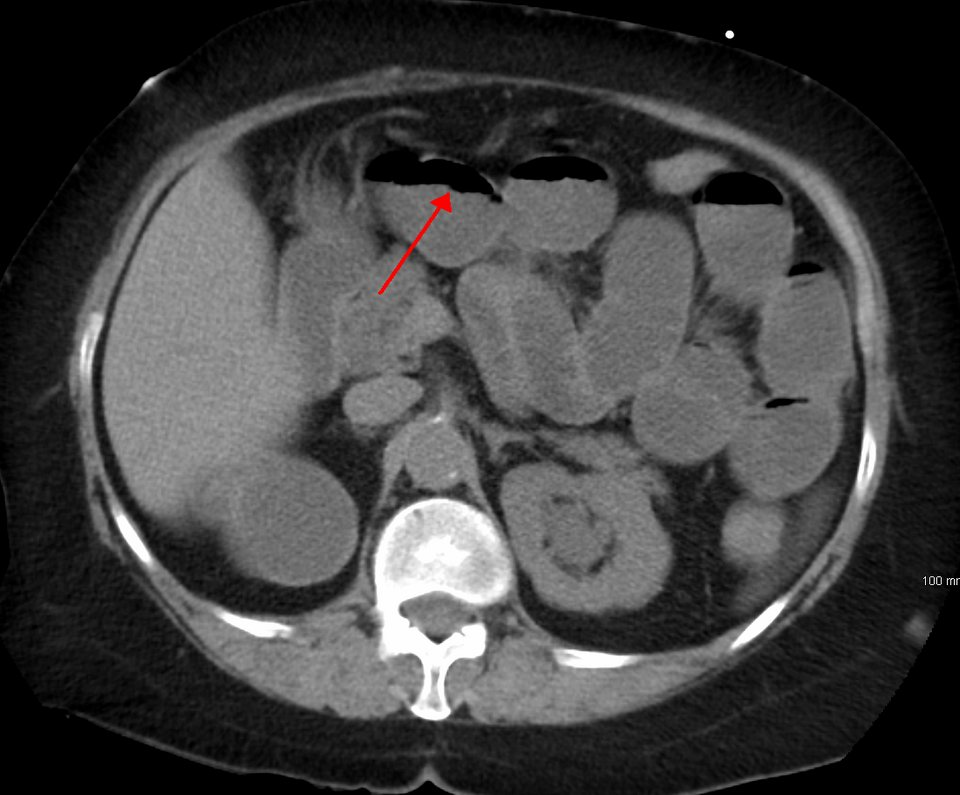
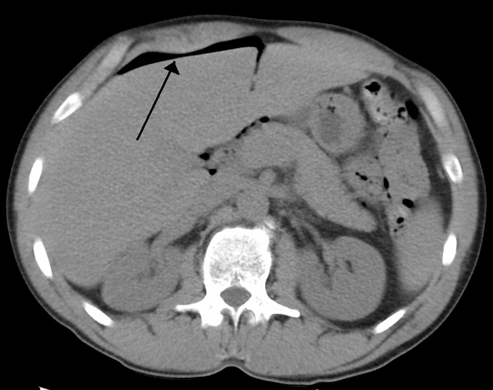

CT Scan Quiz: Practise Reading Real CT Scans
Ten real CT scans to read: bleeds in the head, emergencies in the chest and problems in the abdomen. Read the short story, look at the scan, pick a diagnosis, and the answer explains what you should have spotted.
Question 1 of 10 · Head
A 19-year-old was knocked out in a football clash, woke up and chatted normally, then became drowsy two hours later.
What does this non-contrast CT head show?

Image: Jpogi · CC BY-SA 3.0 · Wikimedia Commons. - Subarachnoid haemorrhage
- Intracerebral haemorrhage
- Extradural (epidural) haematoma
- Acute subdural haematoma
Show answer
Answer: Extradural (epidural) haematoma. A bright, lens-shaped (biconvex) collection presses in from the inside of the skull at the front of the patient’s right side. Extradural bleeds are held back by the skull sutures, so they bulge inwards rather than spreading out. Most come from a torn middle meningeal artery. Tip: Lens shape = extradural. Crescent shape that follows the brain surface = subdural. The ‘lucid interval’ (awake, then deteriorating) is classic but not always present. Image source: Traumatic acute epidual hematoma by Jpogi.
Question 2 of 10 · Head
An 82-year-old on warfarin fell and bumped her head a week ago. Her family says she is now more confused and drowsy.
What does this non-contrast CT head show?

Image: Glitzy queen00 at English Wikipedia · Public domain · Wikimedia Commons. - Normal ageing brain
- Subdural haematoma
- Ischaemic stroke
- Extradural haematoma
Show answer
Answer: Subdural haematoma. A crescent-shaped collection of blood follows the curve of the brain over the patient’s left side (right of the image) and pushes the midline across. Subdurals come from torn bridging veins, so they spread along the brain surface and cross suture lines. Tip: Older people, falls and blood thinners: think subdural even after a minor bump. Check for midline shift. Image source: Trauma subdural by Glitzy queen00 at English Wikipedia.
Question 3 of 10 · Head
A 47-year-old had a sudden ‘worst ever’ headache while lifting weights, then vomited. Her neck is stiff.
What does this non-contrast CT head show?

Image: Dr. George Jallo, pediatric neurosurgeon at Johns Hopkins · CC BY-SA 3.0 · Wikimedia Commons. - Normal CT head
- Extradural haematoma
- Brain abscess
- Subarachnoid haemorrhage
Show answer
Answer: Subarachnoid haemorrhage. Bright blood fills the spaces around the base of the brain (the basal cisterns) and runs out into the Sylvian fissures, where fluid should look dark. Most spontaneous subarachnoid bleeds come from a ruptured berry aneurysm. Tip: CT is most sensitive in the first 6 hours. Look where CSF should be dark: the cisterns, fissures and ventricles. Check the temporal horns too: if they’re enlarged, think early hydrocephalus. Image source: Subarachnoid hemorrhage CT by Dr. George Jallo, pediatric neurosurgeon at Johns Hopkins.
Question 4 of 10 · Head
A 63-year-old with poorly controlled blood pressure suddenly lost power down one side and is now drowsy.
What does this non-contrast CT head show?

Image: Glitzy queen00 at English Wikipedia · Public domain · Wikimedia Commons. - Intracerebral haemorrhage with blood in the ventricles
- Brain abscess
- Extradural haematoma
- Subarachnoid haemorrhage
Show answer
Answer: Intracerebral haemorrhage with blood in the ventricles. Bright blood lies within the brain tissue and has burst into the lateral ventricles, which look cast in white. Blood in the ventricles raises the risk of hydrocephalus. Tip: Deep bleeds (basal ganglia, thalamus) suggest high blood pressure; lobar bleeds in older people suggest amyloid angiopathy. Always ask about anticoagulants: reversal is urgent. Image source: Intracerebral hemorrage (CT scan) by Glitzy queen00 at English Wikipedia.
Question 5 of 10 · Chest
A 66-year-old with high blood pressure has sudden tearing chest pain going through to his back. The blood pressure differs between his arms.
What does this contrast CT of the chest show?

Image: James Heilman, MD · CC BY-SA 3.0 · Wikimedia Commons. - Normal CT angiogram
- Pulmonary embolism
- Aortic aneurysm without dissection
- Aortic dissection involving the ascending aorta (Stanford type A)
Show answer
Answer: Aortic dissection involving the ascending aorta (Stanford type A). Contrast fills a widened ascending aorta that is split by a thin line, the intimal flap (arrowed), into a true and a false channel. Involvement of the ascending aorta makes it Stanford type A: a cardiothoracic surgical emergency. Tip: Type A (ascending aorta involved) = urgent surgery. Type B (descending only) = usually blood pressure and heart rate control first. Image source: DissectionCT by James Heilman, MD.
Question 6 of 10 · Chest
A 58-year-old, 10 days after a knee replacement, is suddenly breathless with a fast heart rate and low oxygen levels.
What does this CT pulmonary angiogram show?

Image: Aung Myat and Arif Ahsan · CC BY 2.0 · Wikimedia Commons. - Aortic dissection
- Pneumonia
- Pulmonary embolism (saddle embolus)
- Pneumothorax
Show answer
Answer: Pulmonary embolism (saddle embolus). On a CT pulmonary angiogram the pulmonary arteries should be bright white with contrast. Here dark filling defects (clot) straddle the split of the main pulmonary artery and extend into both branches: a saddle embolus with a heavy clot burden. Tip: Look for ‘holes’ in the white column of contrast in the pulmonary arteries. Then check whether the right ventricle is bigger than the left: that’s right heart strain. Image source: Pulmonary embolism CTPA by Aung Myat and Arif Ahsan.
Question 7 of 10 · Chest
A 25-year-old was in a car crash. He has left-sided chest pain, and a chest drain has already been put in.
What does this CT of the chest show?

Image: en:User:Clinical Cases · CC BY-SA 2.5 · Wikimedia Commons. - Left pneumothorax
- Normal CT chest
- Pneumomediastinum
- Left pleural effusion
Show answer
Answer: Left pneumothorax. Black air with no lung markings sits between the chest wall and the edge of the left lung (arrowed, right of the image), even with a drain in place. The patchy lung shows bruising (contusion) too. Tip: CT picks up small pneumothoraces that a lying-down chest X-ray misses. Air rises, so in a patient lying on their back it collects at the front of the chest. Image source: Pneumothorax CT by en:User:Clinical Cases.
Question 8 of 10 · Abdomen
A 52-year-old with recurrent flank pain has blood in his urine.
What does this non-contrast CT show (arrows)?

Image: Kristie Guite, Louis Hinshaw and Fred Lee · CC BY 3.0 · Wikimedia Commons. - Calcified renal arteries
- Kidney stones on both sides
- Gallstones
- Normal kidneys
Show answer
Answer: Kidney stones on both sides. On this coronal (front-on) non-contrast CT, small, very bright white dots sit within both kidneys (arrowed). Almost all kidney stones are bright on non-contrast CT. Tip: Non-contrast CT KUB is the test of choice for suspected kidney stones. Contrast can hide them, because it makes the urine bright too. Image source: Non-contrast coronal CT of multiple bilateral renal calculi by Kristie Guite, Louis Hinshaw and Fred Lee.
Question 9 of 10 · Abdomen
A 70-year-old who had bowel surgery years ago has colicky abdominal pain, a swollen tummy and vomiting, and hasn’t passed wind.
What does this CT of the abdomen show?

Image: James Heilman, MD · CC BY-SA 3.0 · Wikimedia Commons. - Large bowel obstruction
- Free air from a perforation
- Small bowel obstruction
- Normal CT abdomen
Show answer
Answer: Small bowel obstruction. Many dilated, fluid-filled loops of small bowel fill the abdomen, with air–fluid levels (arrowed). Adhesions from previous surgery are the most common cause. Tip: Small bowel sits centrally, with folds that cross its full width. Look for the transition point, where swollen bowel meets collapsed bowel: that’s where the blockage is. Image source: PSBOCT by James Heilman, MD.
Question 10 of 10 · Abdomen
A 64-year-old who takes ibuprofen for arthritis has sudden severe abdominal pain. His abdomen is rigid.
What does this CT of the abdomen show?

Image: James Heilman, MD · CC BY-SA 3.0 · Wikimedia Commons. - Free air in the abdomen (pneumoperitoneum)
- Normal gas in the bowel
- Small bowel obstruction
- Gallstones
Show answer
Answer: Free air in the abdomen (pneumoperitoneum). Black gas lies outside the bowel, under the front abdominal wall and over the liver (arrowed). Free air in the abdomen means a hole in the gut, such as a perforated ulcer, until proven otherwise. Tip: Free air rises, so look just under the front abdominal wall and around the liver. A wider (lung) window setting makes small amounts easier to see. Image source: FreeairCT by James Heilman, MD.
Want more? Try the X-ray quiz, or play a new X-ray every day in Opacitis, our daily X-ray puzzle: one film, one story, six diagnoses. Past films are in the Opacitis archive, and there are more games in Medical games.
About this quiz
- 10 questions: 4 head, 3 chest, 3 abdomen.
- Emergency focus: the CT findings you can’t afford to miss on a shift.
- Real images: anonymised CT scans under free licences, credited under each image. Patient stories are fictional.
- Free, no sign-up: your best score is saved on your device only.
Common questions
How do you read a CT scan?
Check the patient, date and whether contrast was given. Then scroll through each body system in turn rather than hunting for one thing, changing the window settings: brain or soft tissue windows for organs and blood, lung windows for air, and bone windows for fractures. Compare left with right, and always look again at the edges of the image.
What does bright mean on CT?
Bright (white) areas are dense: bone, metal, contrast and fresh blood. Fluid is grey-dark, fat is darker, and air is black. Fresh blood in the head is bright for the first few days, then fades to grey over 1 to 3 weeks.
What’s the difference between an extradural and a subdural haematoma?
An extradural (epidural) haematoma sits between the skull and its outer lining, is usually arterial, and looks lens-shaped because the skull sutures stop it spreading. A subdural haematoma sits under that lining, comes from torn veins, and spreads as a crescent along the brain surface.
When is contrast used for CT?
Contrast is injected when blood vessels or organ enhancement matter: CT pulmonary angiograms for clots, CT aortograms for dissection, and most abdominal CTs. It is avoided when it could hide the answer, such as non-contrast CT head for bleeding or CT KUB for kidney stones.
Who is this CT quiz for?
Medical, nursing, paramedic and radiography students, junior doctors brushing up for exams or night shifts, and anyone curious about what CT scans show. Every answer comes with the key finding and a practical tip.
Are these real CT scans?
Yes. They’re real, anonymised CT images shared under free licences or in the public domain on Wikimedia Commons, credited under each image. The patient stories are fictional and written to match each scan.
More medical quizzes
Image credits (contains answers)
- Traumatic acute epidual hematoma by Jpogi · CC BY-SA 3.0 · via Wikimedia Commons.
- Trauma subdural by Glitzy queen00 at English Wikipedia · Public domain · via Wikimedia Commons.
- Subarachnoid hemorrhage CT by Dr. George Jallo, pediatric neurosurgeon at Johns Hopkins · CC BY-SA 3.0 · via Wikimedia Commons.
- Intracerebral hemorrage (CT scan) by Glitzy queen00 at English Wikipedia · Public domain · via Wikimedia Commons.
- DissectionCT by James Heilman, MD · CC BY-SA 3.0 · via Wikimedia Commons.
- Pulmonary embolism CTPA by Aung Myat and Arif Ahsan · CC BY 2.0 · via Wikimedia Commons.
- Pneumothorax CT by en:User:Clinical Cases · CC BY-SA 2.5 · via Wikimedia Commons.
- Non-contrast coronal CT of multiple bilateral renal calculi by Kristie Guite, Louis Hinshaw and Fred Lee · CC BY 3.0 · via Wikimedia Commons.
- PSBOCT by James Heilman, MD · CC BY-SA 3.0 · via Wikimedia Commons.
- FreeairCT by James Heilman, MD · CC BY-SA 3.0 · via Wikimedia Commons.